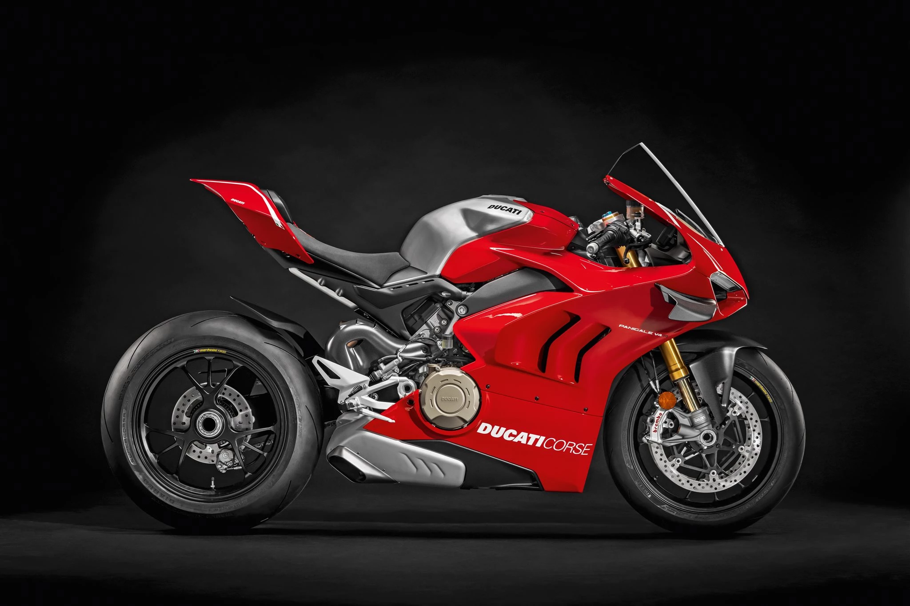

Real Madrid is a club that has always been known for its history, tradition, and winning mentality.
OFFICIAL: Luka Modric to leave Real Madrid this summer
The midfielder announced it on his Social Media.

Real Madrid midfielder Luka Modric has announced that he will leave the club this summer after 12 years of service. The Croatian international made the announcement on his social media accounts, thanking the club and its fans for their support throughout his time in Madrid.
Dear Madridistas,
The moment has come. The moment I never wanted to arrive, but that’s football — and in life, everything has a beginning and an end… On Saturday, I’ll play my final match at the Santiago Bernabé
I arrived in 2012 with the dream of wearing the shirt of the best club in the world and the ambition to achieve great things, but I could never have imagined what was to come.
Playing for Real Madrid changed my life, both as a footballer and as a person.
Ducati's official motto, "In Lightness My Strength," - Ducati India
2025 Ducati Panigale V4 Bookings Open in India
Ducati India has officially opened bookings for the 2025 Panigale V4 across all dealerships, with a booking amount set at ₹5 lakh. The superbike is expected to carry a price tag of around ₹31 lakh (ex-showroom), marking a ₹4 lakh premium over the outgoing model.

The 2025 Ducati Panigale V4 is powered by a 1,103cc, liquid-cooled, V4 engine that produces 215bhp at 13,000rpm and 124Nm of torque at 9,500rpm. The engine is mated to a six-speed gearbox with a slipper clutch. The bike features a host of electronic aids, including cornering ABS, traction control, wheelie control, and launch control.
The design has also evolved, featuring sleeker LED headlights and a more fluid fairing. Despite repositioned winglets, the aerodynamic downforce remains unchanged, ensuring high-speed stability.
With premium upgrades and enhanced performance, the 2025 Ducati Panigale V4 aims to set new benchmarks for superbike enthusiasts in India.
You buy a Ferrari when you want to be someone. You buy a Lamborghini when you are someone.
Unleash the Beast: The Lamborghini Urus S Takes Performance to New Heights
Get ready to embark on an exhilarating journey with the Lamborghini Urus S, a super SUV that redefines the boundaries of power, luxury, and versatility.
The Urus S is powered by a 4.0-liter twin-turbo V8 engine, delivering an astonishing 666 horsepower and 850 Nm of torque. This powerhouse propels the SUV from 0 to 100 km/h in just 3.5 seconds, with a top speed of 305 km/h. The engine is paired with an 8-speed automatic transmission and an all-wheel-drive system, ensuring exceptional handling and performance on any terrain.
What sets the Urus S apart is its unique blend of luxury and performance. The interior is a masterpiece of craftsmanship, featuring premium materials, advanced technology, and customizable options. The infotainment system includes a dual-screen setup with a 10.1-inch touchscreen for navigation and entertainment, along with a 12.3-inch digital instrument cluster.